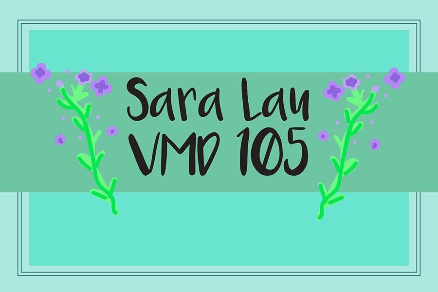

Home | Photoshop | Illustrator | Animate | InDesign | Contact

For this project, I tried to make one unifying theme by adding flowers and a cat I drew on Illustrator and creating a template that made the pages look like a postcard. This program was more convenient because there were paragraph styles which made it easier to type things out.
Click here for more